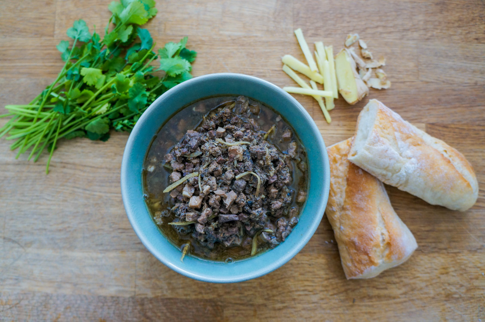

Christmas Culture in Singapore

Christmas in Singapore is a big celebration that gives locals another excuse to do what they love most to eat and shop. At its heart, the holiday is still a special day for Christians in Singapore, who attend Christmas service in commemoration of the birth of Jesus Christ. It is a religious celebration like any other, and regardless of your religious beliefs, everyone gets to take part in the fun of frolicking in fake snow, men in santa suits and of course, Christmas presents.
Christmas Shopping
A close-up of the Christmas reindeer decor outside Wisma Atria shopping centre. Christmas on A Great Street. Every Christmas, the famous shopping belt on Orchard Road transforms into a dazzling winter wonderland of stars and festive decorations, leaving you with no doubt that 'tis the season to be jolly. Visitors to Orchard Road are greeted by a gateway that leads into the Yuletide inspired stretch, promising plenty of photo opportunities and of course, great shopping experiences! Expect to see the busy byways of Orchard Road decked out in festive lights, with a different theme every year.Chrismas Wonderland
An extravaganza of lights, sound and spectacle, Christmas Wonderland at Gardens by the Bay is a great place to experience Yule themed festivities. Beside the dazzling lights and Christmas decorations, this month-long event features an array of attractions and carnival games. You will get to shop at the Festive Market, meet Santa at the largest Santa Grotto in Asia and skate under the stars.Marina Bay Countdown
The countdown party at Singapores iconic Marina Bay has become the highlight of the year end festive calendar. You can join thousands of others to usher in the new year with music, live performances and one of the most spectacular fireworks shows in Asia.
Christmas Food in Singapore
Feng Definitely an acquired taste, this uniquely Eurasian dish makes its appearance during Christmas. Feng is a rich stew made of pig innards (intestines, heart, stomach, liver, kidney lungs and so on), ground spices and plenty of garlic, shallots and ginger. Devil Curry
How did this dish get its name? Probably because it is hot, and because of its fiery red colour. It is believed to have originated with the Eurasians of Malacca in Malaysia, and then brought to Singapore. It is prepared using the traditional Christmas meal leftovers. So it includes ham, sausages, roast turkey, and roast pork, as well as cabbage, carrots, onions and tomatoes.

You will need 250g of unsalted butter, 180g semolina, 180g powedered sugar, 8 eggs , 1 tsp vanilla extract, 3 tbsp brandy, half a cup of chopped almonds, 1⁄4 cup candied winter melon, 50 g wheat flour, 1⁄2 tsp ground nutmeg, 1⁄2 tsp baking powder amd 3 egg whites.
Method: Combine Mix 1 in a kitchen mixer. These make up the wet ingredients. Once thoroughly mixed, add in Mix 2 and continue mixing until all the ingredients have been incorporated and mixed through evenly. Prepare Mix 3 separately - whisks the egg whites and sugar until stiff peaks can be formed without them collapsing. Then add Mix 3 into the combined Mix 1 & 2 and gently fold it throug